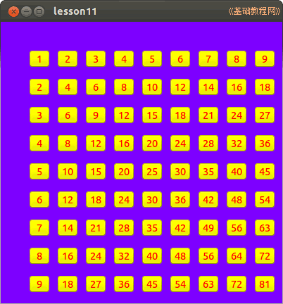

2014-2015 第一学期九年级程序设计教学设计
作者：TeliuTe 来源：基础教程网
十一、学会双重循环 返回目录 下一课
（一）教学设计
1、学习目标：
2、注意事项：绕过弯来，既不要跳也不要落，一楼过了二楼
3、教学过程：
1）教师准备学案和板书；
2）学生整队进入，开机抄黑板上笔记；
3）教师讲解板书演示操作；
4）学生打指法、日志、完成操作；
5）教师打勾记录学生指法成绩，检查日志和操作；
注：学生抄完笔记就开始打指法、日志，老师讲完后再继续完成；
（二）板书设计(学生笔记)
11学会双重循环
1.在一个for循环里有另一个循环
2.两个循环是相乘关系9×9
3.外层先循环，内层后循环
4.缩进格式锯齿形
操作图示：

（三）课后记
第11课 学会双重循环
1、设置窗体背景，事件MsD，输入
Dim i, j As Integer
Dim btn As Button
For i = 1 To 9
For j = 1 To 9
btn = New Button(Me)
btn.x = i * 40
btn.y = j * 40
btn.Width = 30
btn.Height = 20
btn.Text = i * j
btn.Background = &ffff00&
btn.Foreground = &ff0000&
Next
Next
--
2014年12月02日 星期二 13:37
--
界面很简单，代码多，分成一块一块的，拿彩色粉笔括一下
一对一对的两行代码，坐标、大小、颜色
--
输的时候，注意end别丢了，next
还是单词错的多，定义的btn as button 里面的btn错了
--
再有foreground也会漏字母
输完for 以后会自动补上next，然后打上许多回车
--
最后删除的时候，先选中然后再按删除键，要么就用剪切
代码越来越多，看了一下，学生掌握的还可以，出错都是小问题
--
4班中文输入法有好多打不出来的，要么卡住了要么不会按
保元和陈涛两个一项也没做出来，乱跑挨一顿骂
--
需要多找一下相对复杂的例子，代码多但是不乱的例子
以前的数据结构找出来看看，排序的也有些算法
返回目录 下一课
本教程由86团学校TeliuTe制作|著作权所有
基础教程网：http://teliute.org/
美丽的校园……
转载和引用本站内容，请保留作者和本站链接。